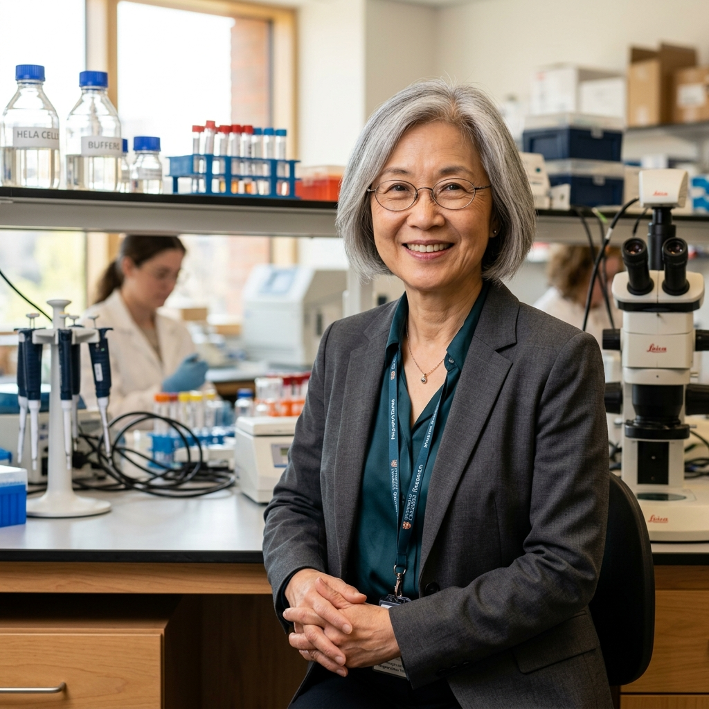

Metabolismo lipídico de precisión en patología hepática.
Grupo Consolidado del Gobierno Vasco (IT1560-22) con sede en la Universidad del País Vasco (UPV/EHU) y el Instituto de Investigación Sanitaria Biocruces Bizkaia.
4 Líneas de vanguardia en medicina molecular.
Abordamos la esteatohepatitis no alcohólica (MASH), la reprogramación lipídica en carcinoma hepatocelular, el eje transcripcional E2F y la espectrometría de masas avanzada SGIker.
18 Investigadores & Liderazgo de Excelencia.
Bajo la coordinación de la Catedrática Patricia Aspichueta, combinamos profesorado universitario, investigadores Ramón y Cajal, investigadores posdoctorales y personal técnico de apoyo.
15+ Tesis Doctorales & Publicaciones Q1 JCR.
Investigaciones publicadas en revistas como Journal of Hepatology, Gut y Molecular Metabolism con transferencia clínica directa hacia el paciente.
Alianza directa entre laboratorio y hospital.
Departamento de Fisiología en la Facultad de Medicina y Enfermería (Campus de Leioa) e Instituto de Investigación Sanitaria Biocruces Bizkaia (Barakaldo).


